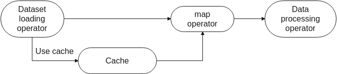

Single-Node Tensor Cache¶

Overview¶
If you need to repeatedly access remote datasets or load datasets from disks, you can use the single-node cache operator to cache datasets in the local memory to accelerate dataset loading.
The cache operator depends on the cache server started on the current node. Functioning as a daemon process and independent of the training script, the cache server is mainly used to manage cached data, including storing, querying, and loading data, and writing cached data when the cache is not hit.
If the memory space is insufficient to cache all datasets, you can configure a cache operator to cache the remaining data to disks.
Currently, the cache service supports only single-node cache. That is, the client and server are deployed on the same machine. This service can be used in the following scenarios:
Cache the loaded original dataset.
You can use the cache in the dataset loading operator. The loaded data is stored in the cache server. If the same data is required subsequently, the data can be directly load from the cache server, avoiding repeated loading from the disk.

Cache the data processed by argumentation.
You can also use the cache in the
mapoperator. The data processed by argumentation (such as image cropping or resizing) is directly cached, avoiding repeated data argumentation operations and reducing unnecessary computations.
You are advised to cache image data in
decode+resize+cachemode. The data processed bydecodecan be directly cached only in single-node single-device mode.
Basic Cache Usage¶
Configure the environment.
Before using the cache service, you need to install MindSpore and set related environment variables. The Conda environment is used as an example. The setting method is as follows:
export LD_LIBRARY_PATH=$LD_LIBRARY_PATH:{path_to_conda}/envs/{your_env_name}/lib/python3.7/site-packages/mindspore:{path_to_conda}/envs/{your_env_name}/lib/python3.7/site-packages/mindspore/lib export PATH=$PATH:{path_to_conda}/envs/{your_env_name}/binYou can also set the environment with the following code.
import os import sys import mindspore python_path = "/".join(sys.executable.split("/")[:-1]) mindspore_path = "/".join(mindspore.__file__.split("/")[:-1]) mindspore_lib_path = os.path.join(mindspore_path, "lib") if 'PATH' not in os.environ: os.environ['PATH'] = python_path elif python_path not in os.environ['PATH']: os.environ['PATH'] += ":" + python_path print(os.environ['PATH']) os.environ['LD_LIBRARY_PATH'] = "{}:{}:{}".format(mindspore_path, mindspore_lib_path, mindspore_lib_path.split("python3.7")[0]) print(os.environ['LD_LIBRARY_PATH'])
When the cache is used, the server memory may be insufficient. Therefore, you are advised to increase the swap memory space of the server to more than 100 GB before using the cache. For details about how to increase the swap memory space on Ubuntu, EulerOS, or CentOS, see related tutorials.
Start the cache server.
Before using the single-node cache service, run the following command to start the cache server:
cache_admin --start
If the following information is displayed, the cache server is started successfully:
Cache server startup completed successfully! The cache server daemon has been created as process id 10394 and is listening on port 50052 Recommendation: Since the server is detached into its own daemon process, monitor the server logs (under /tmp/mindspore/cache/log) for any issues that may happen after startup
cache_adminsupports the following commands and options:--start: starts the cache server. The following options are supported:--workersor-w: specifies the number of worker threads on the cache server. By default, the number of worker threads is half of the number of CPUs. This parameter relies on the NUMA architecture of the server. The value will be adjusted automatically by the server if it’s not a multiple of number of NUMA nodes in the machine.--spilldiror-s: specifies the disk file path for storing remaining data when the cached data size exceeds the memory space. The default value is ‘’ (which means disabling spilling).--hostnameor-h: specifies the IP address of the cache server. The default value is 127.0.0.1.--portor-p: specifies the port number of the cache server. The default value is 50052.--loglevelor-l: sets the log level. The default value is 1 (WARNING). If this option is set to 0 (INFO), excessive logs will be generated, resulting in performance deterioration.
--stop: stops the cache server.--generate_sessionor-g: generates a cache session.--destroy_sessionor-d: deletes a cache session.--list_sessions: displays the list of currently cached sessions and their details.--server_info：displays the configuration parameters and active session list of current server.--help: displays the help information.
In the preceding options, you can use
-hand-pto specify a server. Users can also set environment variablesMS_CACHE_HOSTandMS_CACHE_PORTto specify it. If hostname and port are not set, operations are performed on the server with the IP address 127.0.0.1 and port number 50052 by default.You can run the
ps -ef|grep cache_servercommand to check whether the server is started and query server parameters.You can also run the
cache_admin --server_infocommand to get the full list of configuration of cache server.$ cache_admin --server_info Cache Server Configuration: ---------------------------------------- config name value ---------------------------------------- hostname 127.0.0.1 port 50052 number of workers 16 log level 1 spill dir None ---------------------------------------- Active sessions: No active sessions.Where, the table of Cache Server Configuration lists five detailed configuration information. Active sessions shows the list of active session ID in current server if any.
Cache server generates log files with filename “cache_server.<hostname>.<username>.log.<severity level>.<date-time>.<pid>”. Note that there might be masses of DEBUG logs printed to the screen when
GLOG_v=0is set.To enable data spilling, you need to use
-sto set spilling path when starting cache server. Otherwise, this feature is default to be disabled and it will bring up a memory-only cache server.
Create a cache session.
If no cache session exists on the cache server, a cache session needs to be created to obtain the cache session ID.
$ cache_admin -g Session created for server on port 50052: 1456416665
In the preceding command, 1456416665 is the cache session ID allocated by the server with port number 50052.
You can run the
cache_admin --list_sessionscommand to view all cache sessions on the current server.$ cache_admin --list_sessions Listing sessions for server on port 50052 Session Cache Id Mem cached Disk cached Avg cache size Numa hit 1456416665 n/a n/a n/a n/a n/aOutput parameter description:
Session: specifies the cache session ID.Cache Id: specifies the ID of the cache instance in the current cache session.n/aindicates that no cache instance is created.Mem cached: specifies the cached data volume in the memory.Disk cached: specifies the cached data volume in the disk.Avg cache size: specifies the average size of each line of data in the current cache.Numa hit: specifies the number of NUMA hits. A larger value indicates better time performance.
Create a cache instance.
In the Python training script, use the
DatasetCacheAPI to define a cache instance namedtest_cache, and specify thesession_idparameter to a cache session ID created in the previous step.import mindspore.dataset as ds test_cache = ds.DatasetCache(session_id=1456416665, size=0, spilling=False)
DatasetCachesupports the following parameters:session_id: specifies the cache session ID, which can be created and obtained by running thecache_admin -gcommand.size: specifies the maximum memory space occupied by the cache. The unit is MB. For example, if the cache space is 512 GB, setsizeto524288. The default value is 0.spilling: determines whether to spill the remaining data to disks when the memory space exceeds the upper limit. The default value is False.hostname: specifies the IP address for connecting to the cache server. The default value is 127.0.0.1.port: specifies the port number for connecting to the cache server. The default value is 50052.num_connections: specifies the number of established TCP/IP connections. The default value is 12.prefetch_size: specifies the number of prefetched rows. The default value is 20.
In actual use, you are advised to run the
cache_admin -gcommand to obtain a cache session ID from the cache server and use it as the parameter ofsession_idto prevent errors caused by cache session nonexistence.size=0indicates that the memory space used by the cache is not limited manually, but automically controlled by the cache_server according to system’s total memory resources, and cache server’s memory usage would be limited to within 80% of the total system memory.Users can also manually set
sizeto a proper value based on the idle memory of the machine. Note that before setting thesizeparameter, make sure to check the available memory of the system and the size of the dataset to be loaded. If the memory of cache_server or the dataset size exceeds the available memory of the system, the server may break down or restart, it may also automatically shut down, or the training process may fail.spilling=Trueindicates that the remaining data is written to disks when the memory space is insufficient. Therefore, ensure that you have the write permission on the configured disk path and the disk space is sufficient to store the remaining cache data. Note that if no spilling path is set when cache server starts, settingspilling=Truewill raise an error when calling the API.spilling=Falseindicates that no data is written once the configured memory space is used up on the cache server.If a dataset that does not support random access (such as
TFRecordDataset) is used to load data and the cache service is enabled, ensure that the entire dataset is stored locally. In this scenario, if the local memory space is insufficient to store all data, spilling must be enabled to spill data to disks.num_connectionsandprefetch_sizeare internal performance tuning parameters. Generally, you do not need to set these two parameters.
Insert a cache instance.
Currently, the cache service can be used to cache both original datasets and datasets processed by argumentation. The following example shows two usage methods.
Note that you need to create a cache instance for each of the two examples according to step 4, and use the created
test_cacheas thecacheparameter in the dataset loading operator or map operator.CIFAR-10 dataset is used in the following two examples.
./datasets/cifar-10-batches-bin ├── readme.html ├── test │ └── test_batch.bin └── train ├── batches.meta.txt ├── data_batch_1.bin ├── data_batch_2.bin ├── data_batch_3.bin ├── data_batch_4.bin └── data_batch_5.binimport os import requests import tarfile import zipfile import shutil requests.packages.urllib3.disable_warnings() def download_dataset(url, target_path): """ download and unzip the dataset """ if not os.path.exists(target_path): os.makedirs(target_path) download_file = url.split(\"/\")[-1] if not os.path.exists(download_file): res = requests.get(url, stream=True, verify=False) if download_file.split(\".\")[-1] not in [\"tgz\", \"zip\", \"tar\", \"gz\"]: download_file = os.path.join(target_path, download_file) with open(download_file, \"wb\") as f: for chunk in res.iter_content(chunk_size=512): if chunk: f.write(chunk) if download_file.endswith(\"zip\"): z = zipfile.ZipFile(download_file, \"r\") z.extractall(path=target_path) z.close() if download_file.endswith(\".tar.gz\") or download_file.endswith(\".tar\") or download_file.endswith(\".tgz\"): t = tarfile.open(download_file) names = t.getnames() for name in names: t.extract(name, target_path) t.close() print(\"The {} file is downloaded and saved in the path {} after processing\".format(os.path.basename(url), target_path)) download_dataset(\"https://mindspore-website.obs.cn-north-4.myhuaweicloud.com/notebook/datasets/cifar-10-binary.tar.gz\", \"./datasets\") test_path = \"./datasets/cifar-10-batches-bin/test\" train_path = \"./datasets/cifar-10-batches-bin/train\" os.makedirs(test_path, exist_ok=True) os.makedirs(train_path, exist_ok=True) if not os.path.exists(os.path.join(test_path, \"test_batch.bin\")): shutil.move(\"./datasets/cifar-10-batches-bin/test_batch.bin\", test_path) [shutil.move(\"./datasets/cifar-10-batches-bin/\"+i, train_path) for i in os.listdir(\"./datasets/cifar-10-batches-bin/\") if os.path.isfile(\"./datasets/cifar-10-batches-bin/\"+i) and not i.endswith(\".html\") and not os.path.exists(os.path.join(train_path, i))]
Cache the original loaded dataset.
dataset_dir = "./datasets/cifar-10-batches-bin/train" # apply cache to dataset data = ds.Cifar10Dataset(dataset_dir=dataset_dir, num_samples=4, shuffle=False, num_parallel_workers=1, cache=test_cache) num_iter = 0 for item in data.create_dict_iterator(num_epochs=1): # each data is a dictionary # in this example, each dictionary has a key "image" print("{} image shape: {}".format(num_iter, item["image"].shape)) num_iter += 1
The output is as follows:
0 image shape: (32, 32, 3) 1 image shape: (32, 32, 3) 2 image shape: (32, 32, 3) 3 image shape: (32, 32, 3)
You can run the
cache_admin --list_sessionscommand to check whether there are four data records in the current session. If yes, the data is successfully cached.$ cache_admin --list_sessions Listing sessions for server on port 50052 Session Cache Id Mem cached Disk cached Avg cache size Numa hit 1456416665 821590605 4 n/a 3226 4Cache the data processed by argumentation.
import mindspore.dataset.vision.c_transforms as c_vision dataset_dir = "cifar-10-batches-bin/" # apply cache to dataset data = ds.Cifar10Dataset(dataset_dir=dataset_dir, num_samples=5, shuffle=False, num_parallel_workers=1) # apply cache to map rescale_op = c_vision.Rescale(1.0 / 255.0, -1.0) data = data.map(input_columns=["image"], operations=rescale_op, cache=test_cache) num_iter = 0 for item in data.create_dict_iterator(num_epochs=1): # each data is a dictionary # in this example, each dictionary has a keys "image" print("{} image shape: {}".format(num_iter, item["image"].shape)) num_iter += 1
The output is as follows:
0 image shape: (32, 32, 3) 1 image shape: (32, 32, 3) 2 image shape: (32, 32, 3) 3 image shape: (32, 32, 3) 4 image shape: (32, 32, 3)
You can run the
cache_admin --list_sessionscommand to check whether there are five data records in the current session. If yes, the data is successfully cached.$ cache_admin --list_sessions Listing sessions for server on port 50052 Session Cache Id Mem cached Disk cached Avg cache size Numa hit 1456416665 3618046178 5 n/a 12442 5
Destroy the cache session.
After the training is complete, you can destroy the current cache and release the memory.
$ cache_admin --destroy_session 1456416665 Drop session successfully for server on port 50052
The preceding command is used to destroy the cache with the session ID 1456416665 on the server with the port number 50052.
If you choose not to destroy the cache, the cached data still exists in the cache session. You can use the cache when starting the training script next time.
Stop the cache server.
After using the cache server, you can stop it. This operation will destroy all cache sessions on the current server and release the memory.
$ cache_admin --stop Cache server on port 50052 has been stopped successfully.
The preceding command is used to shut down the server with the port number 50052.
If you choose not to shut down the server, the cache sessions on the server will be retained for future use. During the next training, you can create a cache session or reuse the existing cache.
Cache Sharing¶
During the single-node multi-device distributed training, the cache operator allows multiple same training scripts to share the same cache and read and write data from the cache.
Start the cache server.
$ cache_admin --start Cache server startup completed successfully! The cache server daemon has been created as process id 39337 and listening on port 50052 Recommendation: Since the server is detached into its own daemon process, monitor the server logs (under /tmp/mindspore/cache/log) for any issues that may happen after startup
Create a cache session.
Create the shell script
cache.shfor starting Python training and run the following command to generate a cache session ID:#!/bin/bash # This shell script will launch parallel pipelines # get path to dataset directory if [ $# != 1 ] then echo "Usage: sh cache.sh DATASET_PATH" exit 1 fi dataset_path=$1 # generate a session id that these parallel pipelines can share result=$(cache_admin -g 2>&1) rc=$? if [ $rc -ne 0 ]; then echo "some error" exit 1 fi # grab the session id from the result string session_id=$(echo $result | awk '{print $NF}')
Pass the cache session ID to the training script.
Continue to write the shell script and add the following command to pass
session_idand other parameters when the Python training is started:# make the session_id available to the python scripts num_devices=4 for p in $(seq 0 $((${num_devices}-1))); do python my_training_script.py --num_devices "$num_devices" --device "$p" --session_id $session_id --dataset_path $dataset_path done
Complete sample code: cache.sh
Create and apply a cache instance.
CIFAR-10 dataset is used in the following example. The directory structure is as follows:
├─cache.sh ├─my_training_script.py └─cifar-10-batches-bin ├── batches.meta.txt ├── data_batch_1.bin ├── data_batch_2.bin ├── data_batch_3.bin ├── data_batch_4.bin ├── data_batch_5.bin ├── readme.html └── test_batch.binCreate and write the Python script
my_training_script.py. Use the following code to receivesession_idand pass it as a parameter when defining a cache instance.import argparse import mindspore.dataset as ds parser = argparse.ArgumentParser(description='Cache Example') parser.add_argument('--num_devices', type=int, default=1, help='Device num.') parser.add_argument('--device', type=int, default=0, help='Device id.') parser.add_argument('--session_id', type=int, default=1, help='Session id.') parser.add_argument('--dataset_path', type=str, default=None, help='Dataset path') args_opt = parser.parse_args() # apply cache to dataset test_cache = ds.DatasetCache(session_id=args_opt.session_id, size=0, spilling=False) dataset = ds.Cifar10Dataset(dataset_dir=args_opt.dataset_path, num_samples=4, shuffle=False, num_parallel_workers=1, num_shards=args_opt.num_devices, shard_id=args_opt.device, cache=test_cache) num_iter = 0 for _ in dataset.create_dict_iterator(): num_iter += 1 print("Got {} samples on device {}".format(num_iter, args_opt.device))
Complete sample code: my_training_script.py
Execute the training script.
Execute the shell script
cache.shto enable distributed training.$ sh cache.sh cifar-10-batches-bin/ Got 4 samples on device 0 Got 4 samples on device 1 Got 4 samples on device 2 Got 4 samples on device 3
You can run the
cache_admin --list_sessionscommand to check whether only one group of data exists in the current session. If yes, cache sharing is successful.$ cache_admin --list_sessions Listing sessions for server on port 50052 Session Cache Id Mem cached Disk cached Avg cache size Numa hit 3392558708 821590605 16 n/a 3227 16Destroy the cache session.
After the training is complete, you can destroy the current cache and release the memory.
$ cache_admin --destroy_session 3392558708 Drop session successfully for server on port 50052
Stop the cache server.
After using the cache server, you can stop it.
$ cache_admin --stop Cache server on port 50052 has been stopped successfully.
Limitations¶
Currently, dataset classes such as
GraphDataset,GeneratorDataset,PaddedDataset, andNumpySlicesDatasetdo not support cache.GeneratorDataset,PaddedDataset, andNumpySlicesDatasetbelong toGeneratorOp, so their error message is displayed as “There is currently no support for GeneratorOp under cache.”Data processed by
batch,concat,filter,repeat,skip,split,take, andzipdoes not support cache.Data processed by random data argumentation operations (such as
RandomCrop) does not support cache.The same cache instance cannot be nested in different locations of the same pipeline.
Cache Performance Tuning¶
The cache service performance can be significantly improved in following scenarios:
Cache the data processed by augmentation, especially when the data processing pipeline contains high complexity operations such as decode. In this scenario, you do not need to perform the data augmentation operation repeatedly on each epoch, which saves a lot of time.
Use cache services during simple network training and inference. Compared with complex networks, simple networks require less training time. Therefore, the time performance is significantly improved when cache services are used in this scenario.
However, we may not benefit from cache in the following scenarios:
The system memory is insufficient or the cache is not hit, resulting in poor cache service time performance. You can check whether the available system memory is sufficient and set a proper cache size before using the cache.
Too much cache spilling will deteriorate the time performance. Therefore, try not to spill cache to disks when datasets that support random access (such as
ImageFolderDataset) are used for data loading.Using cache on NLP network such as Bert does not perform. In the NLP scenarios, there are usually no high complexity data augmentation operations like decode.
There is expectable startup overhead when using cache in non-mappable datasets like
TFRecordDataset. According to the current design, it is required to cache all rows to the cache server before the first epoch of training. So the first epoch time can be longer than the non-cache case.